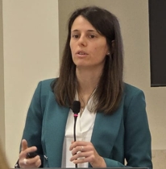

Maria Paola Priola
About Me
I am a PhD student in Computational Statistics at the University of Cagliari (Italy), with a deep interest in the intersection between informatics, statistics, and econometrics. My current research focuses on the use of artificial intelligence and computational statistics, with a particular attention to applications in the healthcare domain.
I earned a Master’s degree in Data Science during the second year of my PhD, and I also hold a Master’s and a Bachelor’s degree in Economics. Before returning to academia, I worked for over seven years in the private sector. At Prometeia (Bologna, Italy), I served as an econometrician and data scientist, contributing to projects involving natural language processing, machine learning, and text/audio analysis for central banks and monetary policy. I coordinated junior staff, and also delivered training on Excel and VBA.
My academic and professional path includes several international experiences: first MSc thesis in Buenos Aires (IAE Business School), an Erasmus exchange at WU Wien (Vienna University of Economics and Business), a finance traineeship in Bucharest at Confindustria Romania through the Erasmus Placement program, and additional periods abroad in Scotland and Ireland.
Fluent in English and Spanish, Bloomberg and Reuters user. Proficient in Python, R, SQL, Excel/VBA, Windows and Linux environments.
I am also the author of Tutto ciò che ci accomuna, a book published as part of a charity project supporting mental health awareness. The initiative includes Voices and Words for Mental Health, a musical tribute to international artists who have experienced mental health challenges.
In my spare time, I enjoy reading, writing, and playing music — I am also a guitarist. I’m passionate about exploring different cultures, and I love sports such as running, snowboarding, and trekking.
Publications
-
Balancing Performance and Environmental Efficiency: a Multiclass Classification Study of Textual Data
Electronic Journal of Applied Statistical Analysis, 2025. Volume 18, Issue 2: 238–263.
Authors: Maria Paola Priola, Maurizio Romano
DOI: 10.1285/i20705948v18n2p238
-
Multi-class text classification of news data
Proceedings of the Statistics and Data Science 2024 Conference. New perspectives on Statistics and Data Science.
Authors: Maurizio Romano, Maria Paola Priola
View on handle.net
-
The informative value of central banks talks: a topic model application to sentiment analysis
Data Science in Finance and Economics, 2022, Volume 2, Issue 3: 181–204.
Authors: Maria Paola Priola, Annalisa Molino, Giacomo Tizzanini, Lea Zicchino
Presented at: Advanced analytics: new methods and applications for macroeconomic policy, Bank of England, London – July 2022
DOI: 10.3934/dsfe.2022009
-
Fed Rate Hikes and the Effects on Turkish Banking System
Turkish Economic Association International Conference on Economics ICE-TEA, 2021.
Authors: Salvatore Perdichizzi, Maria Paola Priola, Lorenzo Prosperi, Giacomo Tizzanini, Lea Zicchino
DOI: 10.2139/ssrn.3309671
Working Papers
-
Unmasking Physical Risk with STORM: An NLP Framework for Natural Hazard Assessment in Earnings Calls
SSRN, 2025.
Authors: Michele Cimino, Annalisa Molino, Maria Paola Priola, Lorenzo Prosperi, Lea Zicchino
DOI: https://dx.doi.org/10.2139/ssrn.4879378
-
Addressing Hallucinations with RAG and NMISS in Italian Healthcare LLM Chatbots
Preprint, 2024.
Authors: Maria Paola Priola
View on arXiv
-
Unmasking Climate Risk in Earnings calls: Traversing Storms and Fire with a Taxonomy-GPT prompting approach
SSRN, 2018.
Authors: Michele Cimino, Annalisa Molino, Maria Paola Priola, Lorenzo Prosperi, Lea Zicchino
Presented at: Conference on Green Finance Research Advances, Banque de France, Paris - December, 2024
DOI: 10.2139/ssrn.3309671
-
Measuring Central Banks’ Sentiment and its Spillover Effects with a Network Approach
SSRN, 2021.
Authors: Maria Paola Priola, Piero Lorenzini, Giacomo Tizzanini, Lea Zicchino
Presented at: Banca d'Italia and Federal Reserve Board Joint Conference on Nontraditional Data & Statistical Learning - November, 2020
DOI: 10.2139/ssrn.3764004
Conferences
-
ITADATA2025: The 4th Italian Conference on Big Data and Data Science
Turin, Italy – September 9–11, 2025
Presented the paper: From Data Sources to User Screens: a Multimodal hEalth Data Lakehouse for ITAly (MEDITA)
-
International Conference on Data Science, Technology and Applications (DATA)
Presented the abstract: A Multimodal hEalth Data warehouse for ITAly (MEDITA)
-
Advanced Analytics: New Methods and Applications for Macroeconomic Policy
Bank of England, UK – July 2022
Presented the paper: The informative value of central banks talks: a topic model application to sentiment analysis
CV
Download full CV (PDF)
Contacts
paola.priola[at]gmail.com |
Google Scholar |
ORCID